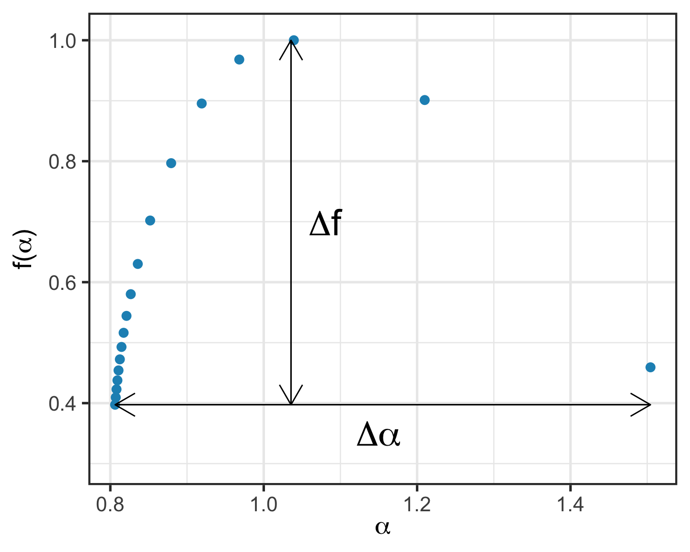

![]()

Multifractals
Over the last decades fractal analyses have revolutionised many fields of science. Such metrics are relevant to fields ranging from economics to neuroscience. However, some objects cannot be accurately described with a single scaling factor — fractal dimension — \(D\) and require an infinite number of values to be accurately described (Stanley et al. 1999).
The multifractal spectrum
The multifractal spectum represents the Holder exponents and their Hausdorff dimensions for an object. Such spectra can be evaluated according to their geometric properties, mainly width (\(\Delta\alpha\)) and height (\(\Delta f\)) (Stanley et al. 1999; Lucas G. Souza França et al. 2018). An example of multifractal spectrum and its geometric features can be seen in figure @ref(fig:spectrumPlot).
The Chhabra-Jensen method
There are several different algorithms that allow the obtention of multifractal spectra from time series. The most famous are the MF-DFA (Gu and Zhou 2010), MF-DMA (Kantelhardt et al. 2002), and Chhabra-Jensen (Chhabra and Jensen 1989).
The Chhabra and Jensen (1989) method, amongst other advantages, allows the direct obtention of the multifractal spectra without the use of a Legendre’s transform (Chhabra and Jensen 1989; Biswas, Cresswell, and Bing 2012; Lucas G. Souza França et al. 2018; Lucas Gabriel Souza França, Montoya, and Miranda 2019). The spectra are obtained directly from the two parametric equations @ref(eq:alpha) and @ref(eq:falpha).
\[\begin{equation} \alpha(q) = \lim_{l\rightarrow0}\frac{\sum_{i}{\mu_{i}(q,l)\log{P_{i}(l)}}}{\log{l}} \label{eq:alpha} \end{equation}\] \[\begin{equation} f(q) = \lim_{l\rightarrow0}{\frac{\sum_{i}{\mu_{i}(q,l)\log{\mu_{i}(q,l)}}}{\log{l}}} \label{eq:falpha} \end{equation}\]\[\mu_{i}(q,l) = \frac{P_{i}(l)^{q}}{\sum_{j}P_{j}(l)^{q}}\]
Runing the script
The script used in Lucas G. Souza França et al. (2018) can be downloaded from my Github repository and is currently available in Python and Matlab (if you would like to help the adaptation to other programming languages, please get in touch!). The script can be run as shown below:
Python
import chhabrajensen as chj
alpha,falpha,Dq,Rsqr_alpha,Rsqr_falpha,Rsqr_Dq,muScale,Md,Ma,Mf = chj.getSpectrum(Timeseries,qValues,scales)Matlab
[alpha,falpha,Dq,Rsqr_alpha,Rsqr_falpha,Rsqr_Dq,muScale,Md,Ma,Mf] = ChhabraJensen_Yuj_w0(Timeseries,qValues,scales)INPUT:
Timeseries, qValues, and scales are all row vectors.
{{% alert warning %}} This function assumes that your time series is all positive values and none of the qValues can be between 0 and 1. {{% /alert %}}
OUTPUT:
alpha (\(\alpha\)) and falpha (\(f(\alpha)\)) scattered against each other give the multifractal spectrum. qValues (\(q\)) and Dq (\(D_q\)) scattered against each other give the generalised dimensions spectrum. Rsqr_alpha, Rsqr_falpha, and Rsqr_Dq are the \(R^2\) values for each of the values in \(\alpha\), \(f(\alpha)\), and \(D_q\) respectively.
{{% alert warning %}} For the correct obtention of multifractal spectra it is important that both qValues and scales are adequately defined. {{% /alert %}}
muScale (\(\log(l)\)), Md, Ma, and Mf (\(\mu(q,l)\)) are the basic matrices from which \(\alpha\), \(f(\alpha)\), and \(D_q\) can be constructed by linear regression. They are included in the output mainly for completeness.
Defining scales range
It is essential to define the range of scales from which the multifractal spectra are obtained to avoid overfitting and inaccuracies in the curves. This can be done by studying the partition function curves and selecting adequate scales.
On a log-log plot, the curves should be linear and scales that do not follow such trend can be easily identified. Figure 2 shows an example of partition function and linear regime.
Figure 2: Partition function by (dyadic) scale - linearised by the logarithm method. The scales show show a linear progression in this plot. Any scales that do not exhibit such pattern should be removed in order to obtain accurate estimates. In this case the first, the second, and the ninth scales, indicated by the dashed lines.
Defining \(q\) range
It is also possible to define a family of dimensions \(D_q\) for multifractal objects. The convergence of \(D_q\) can provide clues on the range of \(q\), as seen in figure 3.
\[D_{q} = \frac{1}{(q-1)}\lim_{l \rightarrow 0} \frac{\log\sum_{i}P_{i}^{q}(l)}{\log l}\]
Figure 3: Example of generalised dimensions \(D_q\) spectrum. A good practice when define the range of \(q\) values is to check hoow long it takes for the \(D_q\) values to converge. In this case around \(q = 30\), as shown by the dashed lines.
Now you can perform your multifractal analyses
This was a quick guide on how to evaluate multifractal time series with the script presented at my Github repository. It is also recommended to add an extra protection against overffiting, if you are evaluating large amounts of data, by verifying the \(R^2\), e.g. discarding values of \(\alpha\) and \(f(\alpha)\) which feature an \(R^2 < 0.9\) — or any other threshold you consider adequate according to your data.
References:
Biswas, Asim, Hamish P. Cresswell, and C. S. Bing. 2012. “Application of Multifractal and Joint Multifractal Analysis in Examining Soil Spatial Variation: A Review.” In Fractal Analysis and Chaos in Geosciences, edited by Sid-Ali Ouadfeul, 109–38. InTech. https://doi.org/10.5772/51437.
Chhabra, Ashvin, and Roderick V. Jensen. 1989. “Direct determination of the f(\(\alpha\)) singularity spectrum.” Physical Review Letters 62 (12): 1327–30. https://doi.org/10.1103/PhysRevLett.62.1327.
França, Lucas G. Souza, José G. Vivas Miranda, Marco Leite, Niraj K. Sharma, Matthew C. Walker, Louis Lemieux, and Yujiang Wang. 2018. “Fractal and Multifractal Properties of Electrographic Recordings of Human Brain Activity: Toward Its Use as a Signal Feature for Machine Learning in Clinical Applications.” Frontiers in Physiology 9 (December): 1–18. https://doi.org/10.3389/fphys.2018.01767.
França, Lucas Gabriel Souza, Pedro Montoya, and José Garcia Vivas Miranda. 2019. “On multifractals: A non-linear study of actigraphy data.” Physica A: Statistical Mechanics and Its Applications 514 (January): 612–19. https://doi.org/10.1016/j.physa.2018.09.122.
Gu, Gao-Feng, and Wei-Xing Zhou. 2010. “Detrending moving average algorithm for multifractals.” Physical Review E 82 (1): 011136. https://doi.org/10.1103/PhysRevE.82.011136.
Kantelhardt, Jan W., Stephan A. Zschiegner, Eva Koscielny-Bunde, Shlomo Havlin, Armin Bunde, and H.Eugene Stanley. 2002. “Multifractal detrended fluctuation analysis of nonstationary time series.” Physica A: Statistical Mechanics and Its Applications 316 (1-4): 87–114. https://doi.org/10.1016/S0378-4371(02)01383-3.
Stanley, H. E., L. A. N. Amaral, A. L. Goldberger, S Havlin, P.Ch. Ivanov, and C.-K. Peng. 1999. “Statistical physics and physiology: Monofractal and multifractal approaches.” Physica A: Statistical Mechanics and Its Applications 270 (1-2): 309–24. https://doi.org/10.1016/S0378-4371(99)00230-7.
Citation
BibTeX citation:
@online{frança2020,
author = {França, Lucas},
title = {Estimating Multifractal Spectra with {Chhabra-Jensen’s}
Method},
date = {2020-01-06},
url = {https://lfranca.uk/posts/multifractal-chj/},
langid = {en}
}
For attribution, please cite this work as:
França, Lucas. 2020. “Estimating Multifractal Spectra with
Chhabra-Jensen’s Method.” January 6, 2020. https://lfranca.uk/posts/multifractal-chj/.